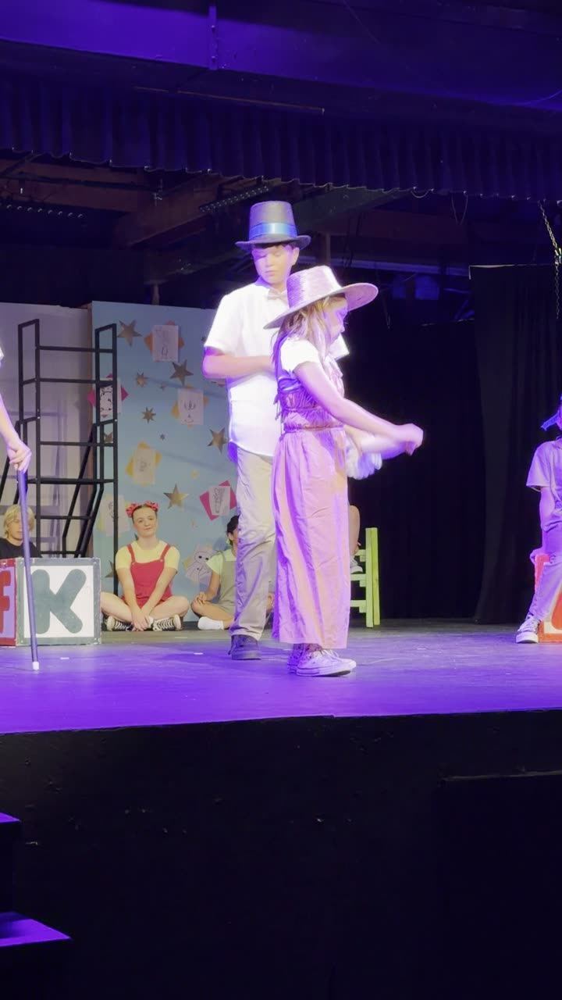
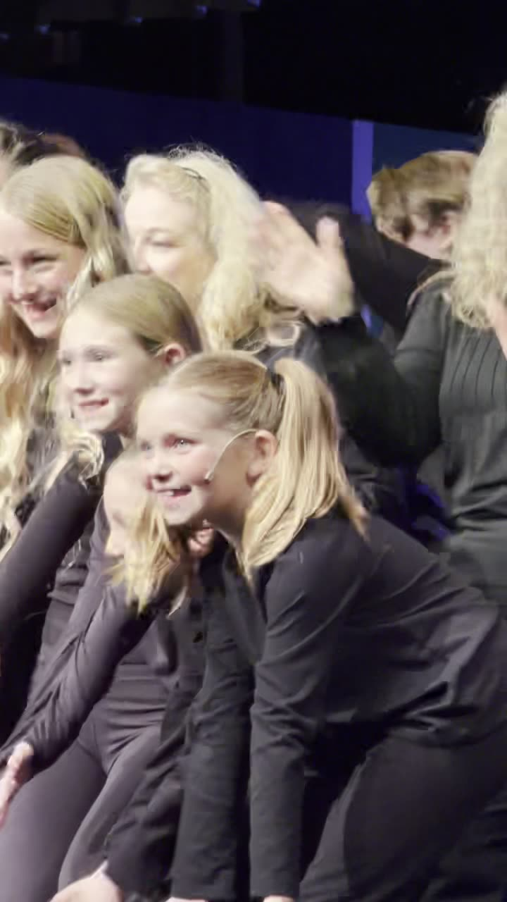

Scripted scene
Ghost of Christmas Present
Live stage dialogue opposite Scrooge, with the Cratchit family.
0:39 · production title to be confirmed
Actor · Stage & Screen
Official acting portfolio.
Performances, footage and professional enquiries, presented for casting directors, agents and managers.
Professional casting headshots are in production. The images shown in Headshots are a personality and range set.
Performance reel · 1:30 · Acting, singing and ensemble work
01 · Headshots
A set of expressions captured in one session, showing the range she plays in. This is a personality and range set rather than formal casting headshots, which are in production.


Session footage from a single expression shoot. A casting headshot set covering distinct looks - commercial, theatrical and lighter theatrical - is the next photography step.
02 · Performances
Scripted theatre, musical numbers and ensemble work, filmed live in performance.


Each clip is real performance footage. Production and song titles are awaiting confirmation before they are published as credits.


Three further recordings exist of one musical number and one short stage dance clip. They are held back from the public page until permission for the other performers in frame is confirmed.
03 · Commercial preview
Self-taped commercial auditions — a product read, an unboxing-style demonstration and a closing to camera.
Product demonstration read, opening with the kit and closing to camera. 0:39
Warm single-take read, handling the product and closing on the brand. 0:27
These are practice self-tapes made for audition purposes rather than commissioned campaigns. Product names appear because they were the subject of the exercise.
04 · Résumé
Presented on the page and available as a single-page PDF for casting offices.
Production years, venue names and any representative details are being confirmed before they are published. Credits are listed only once confirmed, with venue or company named rather than school.
05 · Special skills
Skills are listed only where they are genuinely held, with footage where it exists.
Classes since age two. Featured solo vocal on stage in the reel.
Competition dance, jazz and ballet, since age two. Stage work throughout the reel.
Awaiting list
Awaiting list
Awaiting list
Awaiting list
06 · About Wynter
Introduction · 0:37
Wynter Pearce first went on stage when she was two, in The Nutcracker. She fell in love with performing and has been taking dance and singing classes ever since.
She has done competition dance, jazz and ballet, and her first major role was Tiny Tim in the Christmas story play. It was a full production — four weeks long, three shows a week — and she had to show up every Friday, Saturday and Sunday for an entire month, which showed her ability to remember her lines and also to be consistent and on time.
I live in nature, a tiny town near Yosemite. I love nature, I love cats and dogs. I feed a crow who flies in my window and sits on my bed. I have a pet bird and a chameleon and I love be-dazzling.
My first play was when I was two and I was in the Nutcracker. There's a small theater near where I live called the Golden Chain. That's where I've been doing all my recent plays and I love going there after school.
07 · Enquiries
All casting, representation and production enquiries are handled by Wynter's parent.
Contact address awaiting confirmation. No personal contact details, address, school or schedule are published anywhere on this site.